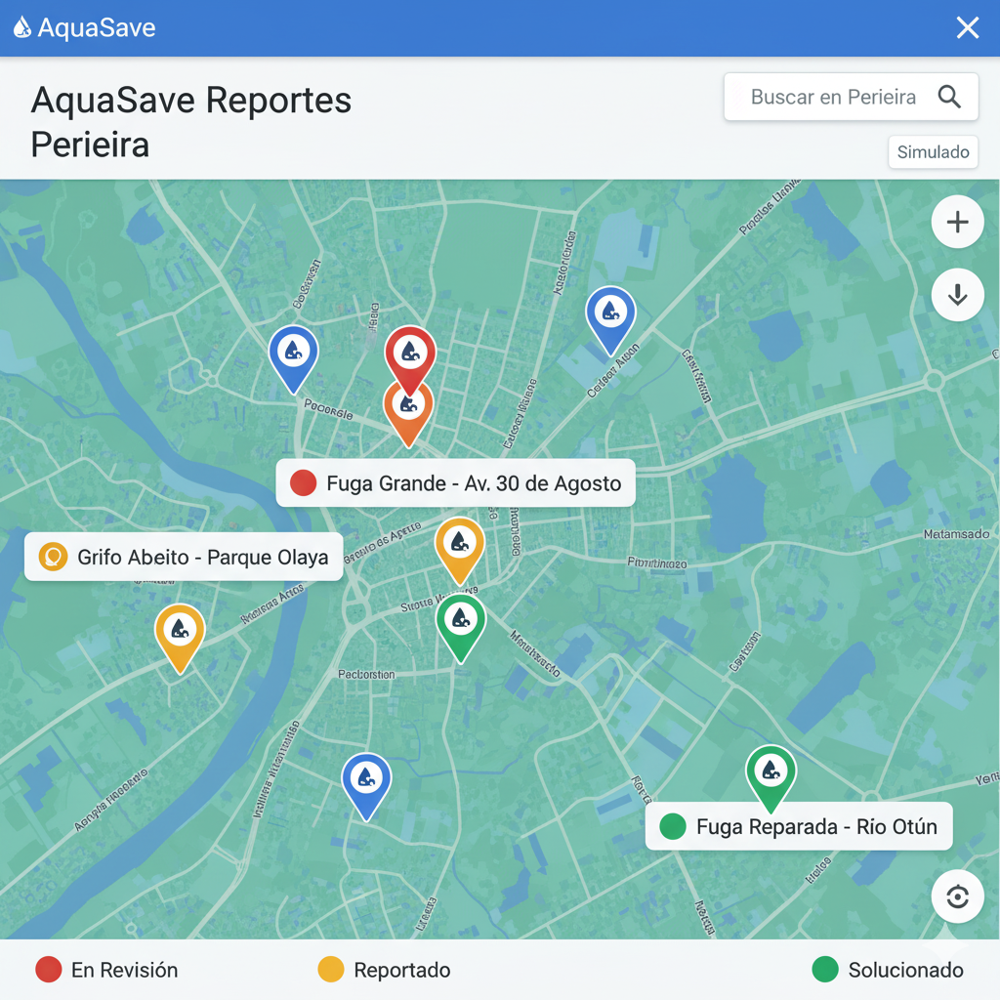

Reportar una Fuga Ahora
Tu reporte nos ayuda a reducir el desperdicio. ¡Es fácil y rápido!
Mapa de Reportes (Simulado)

🔴 Fuga \#005 - En Revisión
🟢 Fuga \#003 - Solucionado
Mostrando reportes simulados; no se usa una base de datos real.